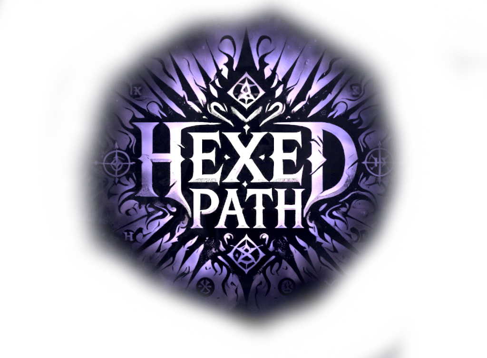

Loading

Hexed Path — это сессионная кооперативная PVE-игра для Dota 2 с элементами рогалика и RTS для 1-6 игроков, геймплей которых заключается в том, чтобы прокачивать своего персонажа, открывать новых, исследовать и проходить генерируемые локации, строить и развивать базу, побеждать уникальных противников, находить ценный лут и создавать собственный билд под желаемую роль в команде.